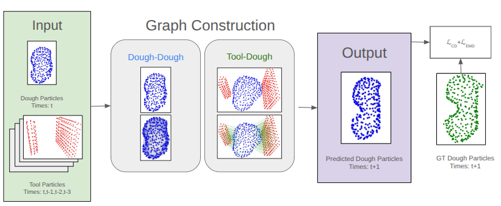

GNN Dynamics Model

A graph neural network predicts per-particle motion of the dough from the current dough state and tool particles (with history). Graph connectivity is recomputed at every timestep via fixed-radius search, and the representation is translation-invariant — it contains no absolute positions — which improves generalization. The model is trained with a Chamfer Distance + Earth Mover's Distance loss, rolled out over multiple future timesteps to stabilize long-horizon predictions.